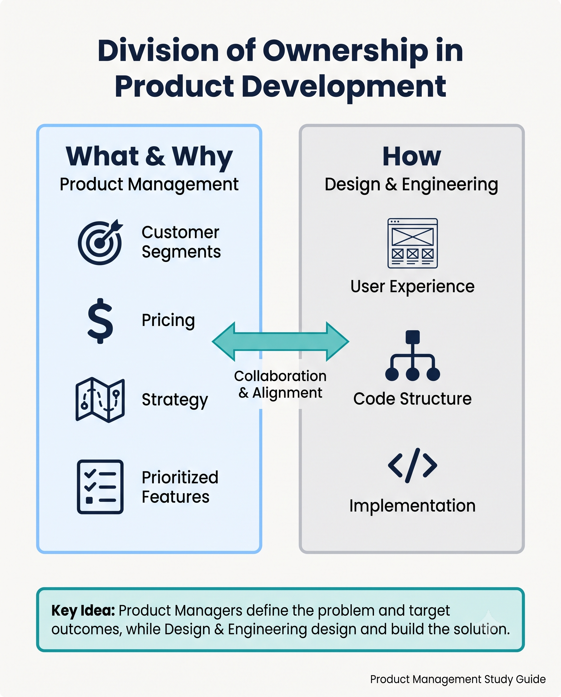
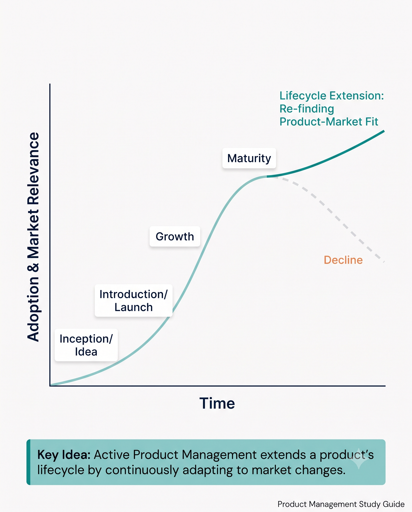
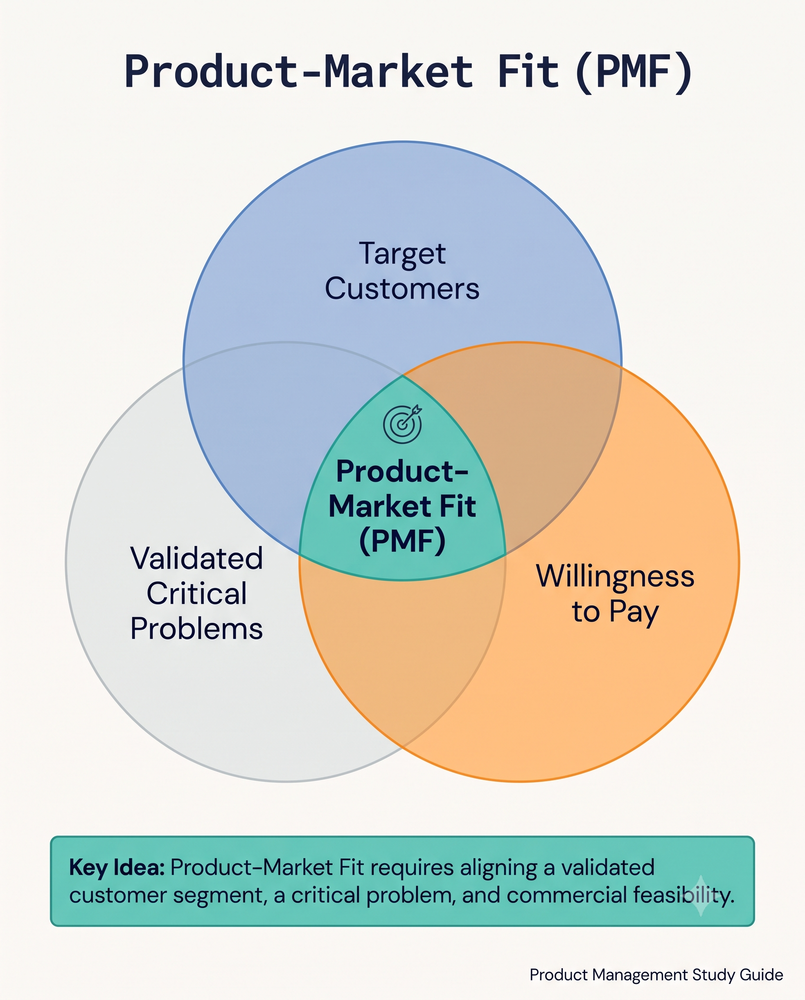
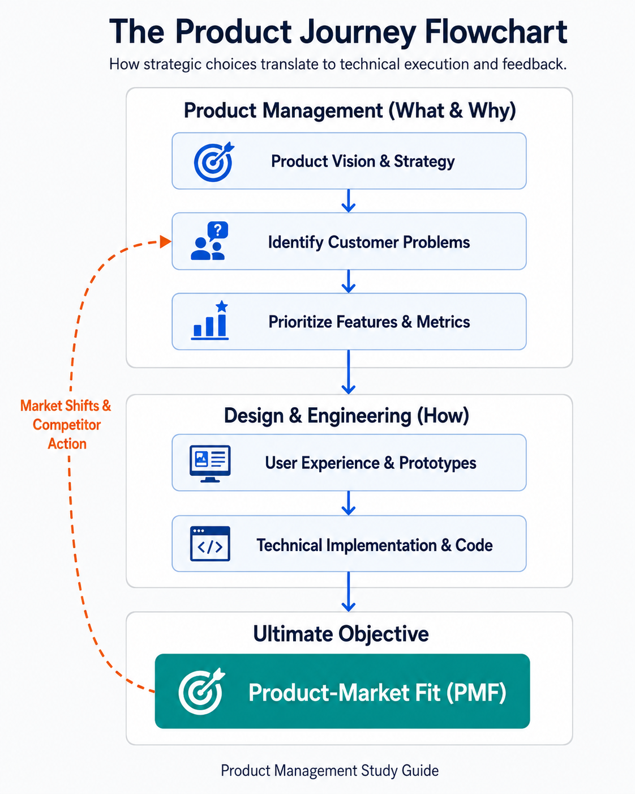

Your goal
Distinguish between what/why (PM) and how (engineering/design) decisions, map lifecycle stages, and evaluate product-market fit.
Lecture overview
This lecture explains the primary responsibilities of a Product Manager (PM). By the end, you should be able to: Distinguish between the decision ownership of the PM (What/Why) and the execution ownership of Design and Engineering (How); Map the stages of the Product Lifecycle and explain the PM's role in extending it; and Define Product-Market Fit (PMF) and the questions required to establish and maintain it in a shifting market.
Central argument
The Product Manager drives a cross-functional team through the product lifecycle to find and maintain product-market fit by owning the "what" and "why" decisions, while Design and Engineering own the "how."
1. The Decision Boundary: What and Why vs. How
A fundamental mental model of product development is the division of decision-making ownership:
- The Product Manager owns the "What" and "Why": The PM is responsible for deciding what features are built, why they are important, who the target customers are, how the product is priced, and how to position the product against competitors.
- Design and Engineering own the "How": Designers and software engineers are responsible for determining how the product will look, feel, behave, and be technically implemented.

03-what-and-why-vs-how-boundary.png
Compares the ownership areas of Product Management (What & Why) vs Design and Engineering (How).
The PM does not do everything. A PM does not write production code, design high-fidelity user interfaces, or run marketing campaigns. Instead, they drive the process by aligning these distinct disciplines toward a unified goal.
2. Driving the Product Lifecycle
A product behaves much like a living organism, moving through a predictable lifecycle. The PM is responsible for driving the product through these stages and actively extending its relevance:
- Inception / Idea: Initiated by a product vision or an initial idea.
- Introduction: The product is built and launched to early customers.
- Growth: The customer base expands, and adoption increases.
- Maturity: Growth stabilizes. As technology advances and competitors emerge, the product risks stagnation.
- Decline: The product begins to lose relevance and market share.

03-product-lifecycle-curve.png
Visualizes how active Product Management decisions keep a product relevant and prevent decline.
The instructor emphasizes that a critical role of the PM is to extend the product's lifecycle—keeping it alive, modern, and relevant before it slides into decline.
3. Uniting the Cross-Functional Team to Find Product-Market Fit
At the heart of the PM's role is the pursuit of Product-Market Fit (PMF). In simple terms, PMF answers the question: Are there people who will buy my product?
In practice, achieving PMF requires continuous validation. The product team must answer four key questions:
- What do our customers look like?
- Do we solve a critical problem for them?
- Are they willing to pay for this solution?
- How do we verify that they need it?

03-product-market-fit-sweet-spot.png
Shows the sweet spot where customer needs and commercial willingness align.
PMF is not a one-time achievement. Because markets, technologies, and customer expectations constantly change, PMs and their teams must continuously evaluate and re-find PMF even for mature and highly successful products.
Comparison
The table below contrasts the ownership areas between Product Management and the Design/Engineering disciplines:
| Area of Ownership | Product Management (What & Why) | Design & Engineering (How) |
|---|---|---|
| Strategic Focus | Target customer segments, pricing, competitor positioning, partnerships. | User experience, interface layout, technical architecture, codebase scaling. |
| Feature Validation | Determining if a feature solves a critical problem and drives business success. | Determining how to implement the feature reliably, securely, and intuitively. |
| Success Metrics | Product-market fit, customer retention, revenue, adoption. | System uptime, performance latency, usability benchmarks, defect rates. |
Practical Product Management example
Situation
A candidate-assessment platform experiences a decline in customer growth because competitors have launched AI-assisted screening filters. The engineering team wants to rebuild the platform's video-interview storage architecture to support high-definition video, while sales wants a custom interface for a single large customer.
Decision
The PM decides to focus the next development cycle on validating and building an automated candidate shortlisting assistant (the What and Why), deferring the database rebuild and the custom client request.
Reasoning
The PM's market analysis shows that recruiters' primary pain point is screening time, not video quality. Rebuilding storage or catering to one client does not address the broader market threat. The PM aligns the engineers and designers on the core problem: reducing time-to-hire.
Consequence
Designers map a streamlined shortlisting flow, and Engineers design the AI pipeline architecture (the How). The new assistant successfully reduces screening time by 40%, keeping the platform competitive and re-establishing its product-market fit.
Transferable lesson
PMs must guide teams toward validating and solving market-wide customer problems rather than focusing on low-priority technical updates or isolated customer requests.
Common misunderstandings
"The PM is the 'CEO of the Product' and dictates the solution"
The PM drives the direction by owning the problem space (what/why) but does not dictate the technical execution. The PM must rely on influence and collaboration, uniting designers, engineers, data scientists, and stakeholders to define the solution together.
Decision consequence: Prevents team friction, leverages specialized design/engineering expertise, and leads to more robust technical implementations.
"Product-Market Fit is a one-time milestone"
Achieving PMF at launch does not guarantee future success. A changing market, new technologies, or competitor actions can degrade fit. Finding and re-finding PMF is an ongoing, continuous responsibility.
Decision consequence: Drives continuous discovery and prevents products from sliding into decline during maturity stages.
Key concepts and definitions
- Product Manager (PM)
- The role responsible for driving a product from inception to delivery by owning the "what" and "why" decisions.
- Product-Market Fit (PMF)
- The sweet spot where a product successfully solves a critical problem for a customer base that is willing to buy it.
- Product Lifecycle
- The stages a product moves through from idea, introduction, and growth, to maturity and eventual decline.
Key takeaways
- Own the What and Why: The PM's core responsibility is to define what to build and why it is valuable, leaving the "how" to Design and Engineering.
- Drive, Don't Do Everything: A PM does not write code or design screens but coordinates cross-functional teams to work as a well-oiled machine.
- Extend the Lifecycle: PMs must proactively iterate on mature products to keep them relevant and prevent them from sliding into decline.
- PMF is Customer-Centric: Finding PMF requires a deep understanding of target customers, their critical problems, and their willingness to pay.
- Continuous Re-evaluation: Because markets shift, maintaining product-market fit is a continuous process of discovery and execution.
- Unify the Team: Success depends on aligning diverse roles (engineering, design, data science, legal, marketing) around a single goal: delivering value.
Visual summary

03-visual-summary.png
Shows the product journey flow and feedback loops between PM, design, engineering, and product-market fit.
The visual summary shows that the product journey starts in the Product Management ownership domain by identifying customer problems based on the vision, leading to feature prioritization. These prioritized decisions cross the boundary into Design and Engineering, where they are executed as UX designs, prototypes, and production code. The ultimate output is evaluated against the market to establish Product-Market Fit. Shifting market dynamics loop back into the PM domain, requiring continuous problem re-evaluation.
One-minute review
Product Managers own the "what" and "why" decisions of a product, defining features, targets, pricing, and success, while Design and Engineering own the "how" of user experience and implementation. The PM drives the product through its entire lifecycle (inception, introduction, growth, maturity, decline) with the core goal of achieving and maintaining Product-Market Fit (PMF)—ensuring the product solves critical customer problems that people are willing to pay for in a constantly changing market.
Interactive practice
Make the Product Management decision
A recruiter platform wants to address a drop in applicant conversions. Classify which of the following decisions belong to you (What & Why) vs. your Design & Engineering peers (How).
Scenario 1: Decide if we should build an automated screening filter to address recruiters' high screen time.
Scenario 2: Choose between a single-page onboarding wizard or a multi-step progressive disclosure flow.
Scenario 3: Select the database indexing strategy and query caching model to keep search response under 100ms.
Explore lifecycle stages
Explore what a Product Manager focuses on at each stage of a product's life to sustain and maximize success: